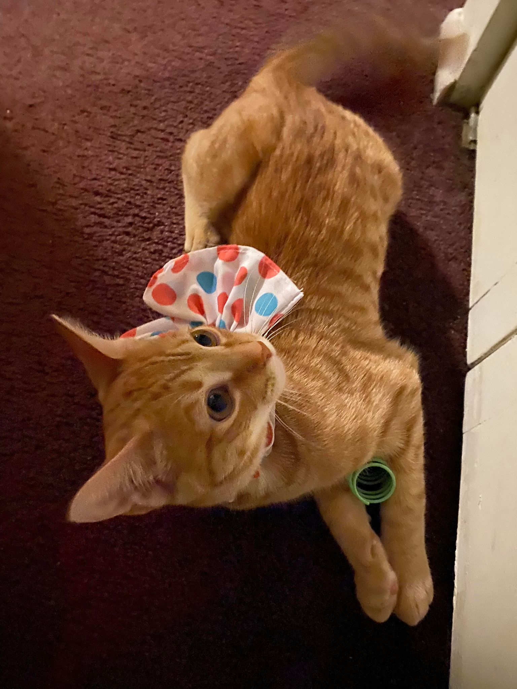

This is Kumquat, an orange tabby. She was born in July, and my roommates and I adopted her in October. She was born with brain swelling, which means that she has balance issues--mainly with walking. Even though cats are known to always land on their feet, Kumquat is known to fall off of the sofa, tables, anything that she is in the middle of climbing all of the time. Recently, she has been having weird spazes, where her whole body shakes, so she's on medication for it.
She loves food, spring toys, and her fishing pole toy. Everytime there is food on the coffee table, she is there to try a nibble (or a lot). Water is also fair game. She hates hats and getting her nails clipped.